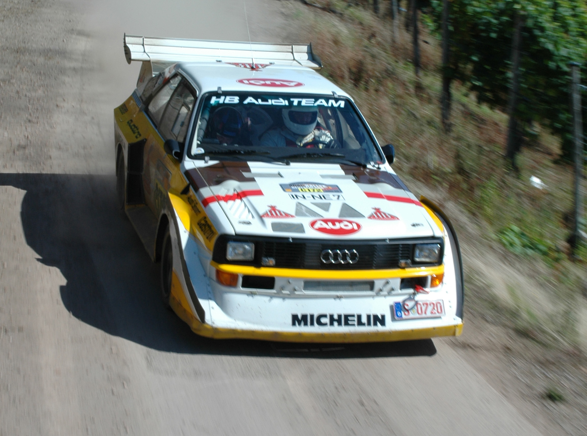

Audi Quattro Sport S1 E2
Audi Quattro Sport S1 E2 — друга гоночна модифікація (еволюція) E2 (або Evo-2) була омологована 1 липня 1985 20 модифікованими машинами, як того і вимагали правила. Візуально це найбільш відомий варіант Audi Sport quattro, відомий за розвиненим аеродинамічним обважуванням у вигляді переднього спойлера, заднього антикрила та збільшених розширювачів колісних арок із прямокутними отворами для розташованої в багажнику системи охолодження двигуна.
На початок
Lancia Delta S4
Lancia Delta S4 — ралійний автомобіль Групи B виробництва італійської автомобільної компанії Lancia. Delta S4 брала участь у чемпіонатах світу з ралі у 1985 та 1986 роках, поки клас групи B не був розпущений, а автомобілі зрештою були повністю заборонені до участі у змаганнях європейським санкціонуючим органом FIA. Автомобіль прийшов на зміну та став розвитком Lancia 037. Delta S4 повною мірою використовувала правила групи B та відрізнялася двигуном, встановленим перед задньою віссю, та повним приводом для чудового зчеплення на пухких поверхнях.

На початок
Peugeot 205 Turbo T16
Peugeot 205 Turbo T16 — був розроблений корпорацією Peugeot спеціально для чемпіонату світу з авторалі. Маркування та зовнішній вигляд практично не відрізнялися від серійної 205, але "начинка" стала зовсім іншою. Кабіна знаходилася всередині трубчастої рами. Замість заднього сидіння знаходиться 4-циліндровий двигун DOHC з турбонаддувом. Доповнювали картину постійний повний привід та підвіска на здвоєних паралельних А-подібних важелях. Знімна задня частина кузова, виготовлена з цільної склопластикової панелі, забезпечувала легкий доступ до двигуна та підвіски.

| На початок |